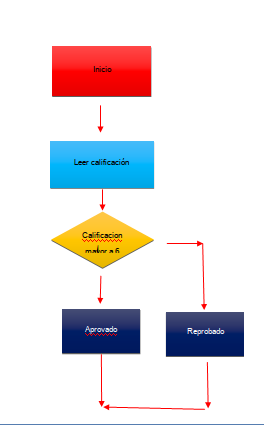
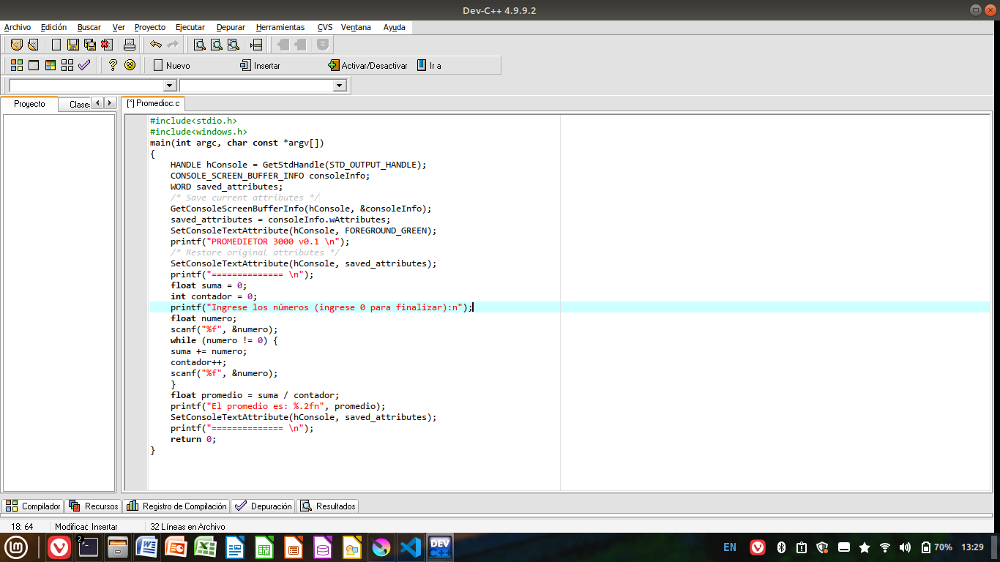
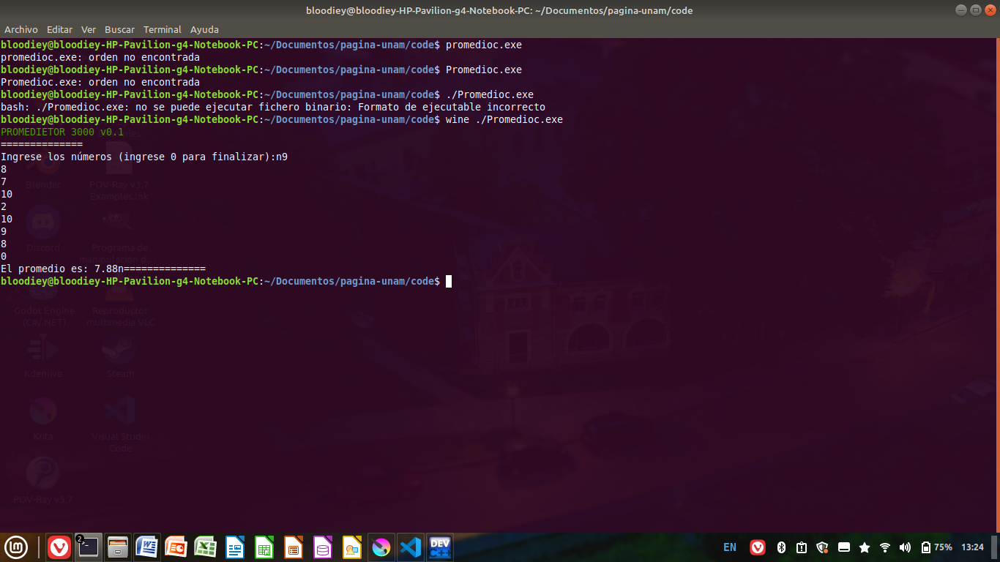

|
Pseudologo Estructura repetitiva desde-mientras (For) Inicio N = numero de calificaiones para I = 1,
I = I + 1, hasta N{ Recibe Calificacion Suma Calificacion } Calcular promedio = promedio/n Dar el promedio Fin (Creo que es más fácil hacerlo en programa 💀) Estructura repetitiva mientras (while) Inicio N = número de calificaciones Establecer la suma = 0 I = 1 Mientras N > I { Establecer Calificacion Suma = suma + calificacion I = I +1 } Promedio = suma/n Dar el promedio Fin Estructura repetitiva hacer-mientras (do while) Inicio N = Numero de calificaciones I = 1 suma = 0 Hacer { Suma = suma + calificacion I = I +1
} mientras N >= I Promedio = suma/N Dar promedio Fin |
diagrama de flujo  |
  |